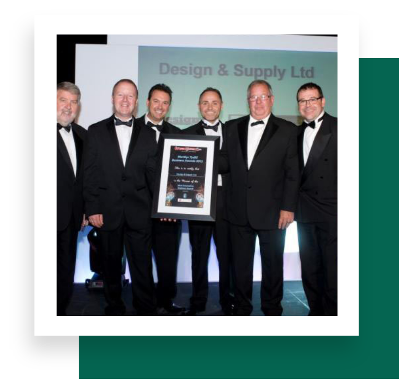

We are the door specialists. A trusted UK manufacturer of industrial doors and architectural solutions since 1986.
Design & Supply has operated for over 36 years as a trusted UK manufacturer of industrial doors and architectural solutions. We specialise in security-rated steel doors, CE-marked fire doors (FD30–FD240), flood-resistant doors, acoustic doors, and the Slimline Schüco Jansen range.
Our steel hinged doors feature extended fire ratings and certified LPCB security ratings (LPS1175 SR1–SR4), with customisation options including manual or electronic locking systems, glazed or louvred panels, and hundreds of RAL and BS powder-coat colours.
Many standard sizes are available from stock, with installation in as little as 10 days.

At Design and Supply, our mission is to be unwavering in our dedication to our clients. We strive to understand their unique needs and aspirations, and to provide optimal solutions that go beyond expectations.
We are equally committed to nurturing a thriving work environment where our valued employees find opportunities for growth, fulfilment and personal enrichment — and relentless in our pursuit of innovation. Sustainable growth is not just about business success, but about the enduring impact we create for our clients, employees, and the world we inhabit.
We are dedicated to producing high-quality, well-crafted products that consistently exceed customer expectations.
Staying at the forefront of design trends and manufacturing techniques, continuously improving and offering creative solutions.
We prioritise the needs of our customers, offering tailored solutions and excellent service throughout every step of the process.
Operating with honesty, transparency and ethical behaviour, we build trust with our customers, partners and stakeholders.
From leased premises and rented equipment in 1986 to one of the UK's leading steel door manufacturers — our story is one of steady investment in people, testing and certification.
Meet the TeamGet in touch for a free quote and discover why businesses across the UK choose Design & Supply for doors that deliver protection, performance and peace of mind.